Git 學習筆記 (三) - 編輯 commit

七、編輯 commit
1. 修改 commit 記錄 ( 修改歷史訊息 )
使用 - - amend 參數 (只能修改最後一次 commit 記錄)
1
2$ git commit --amend // 會進入VIM，再自行修改 commit 內容
$ git commit --amend -m "修改內容" // 不進入VIM，修改 commit 內容使用 Reset
1
2
3
4// 先拆掉剛剛的 commit ，再次 commit 並寫入要的 commit 記錄
$ git reset HEAD^
$ git add .
$ git commit -m "新的commit記錄"使用 Rebase
1
2
3$ git rebase -i SHA-1值 // 使用 Rebase 編輯 commit(i 代表進入互動模式)
// 使用 r - 編輯 commit排序為舊到新(上至下)
結果：(修改的 commit 之後所有 SHA-1值 都會重新計算)
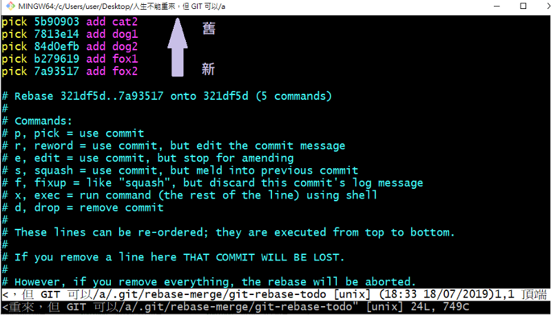
1 | # Commands: |
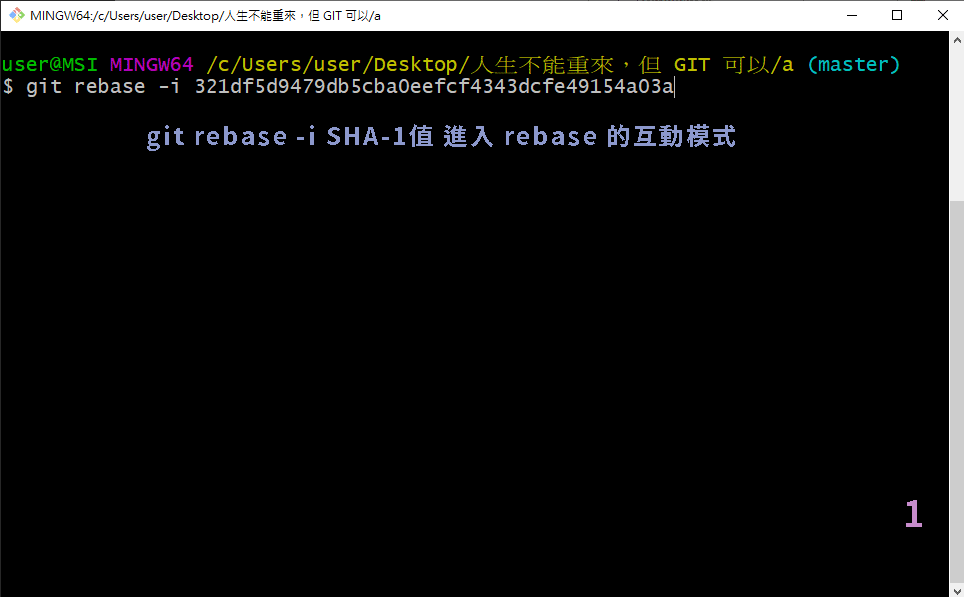
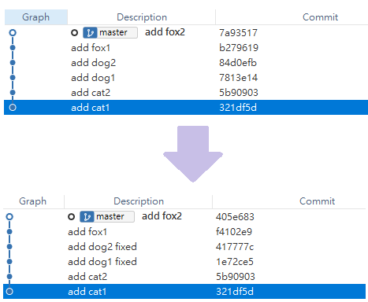
取消此次 rebase
1
$ git reset ORIG_HEAD --hard
2. 追加檔案到 commit
使用 - - amend 參數 (只能修改最後一次 commit 記錄)
1
2
3// 追加的檔案都須先 git add 加入暫存區
$ git commit --amend 進入VIM，會顯示追加的檔案，:wq儲存離開
$ git commit --amend --no-edit 不進入VIM，追加檔案使用 Reset
1
2
3
4// 先拆掉剛剛的 commit ，把檔案加入暫存區後，再次 commit
$ git reset HEAD^
$ git add .
$ git commit -m "add file"
3. 拆掉 commit 重做
使用 Reset
1
2
3$ git reset HEAD^^ // 還原至當前版本的前 2 次版本( ^ 代表前 1 次)
$ git reset 1234567^^ // 還原至 1234567 (SHA-1 值) 的前 2 次版本( ^ 代表前 1 次，^^ 代表前 2 次，以此類推)
$ git reset 1234567~100 // 還原至 1234567 (SHA-1 值) 的前 100 次版本
4. 只 commit 某個檔案部分內容
1 | $ git add -p index.html |
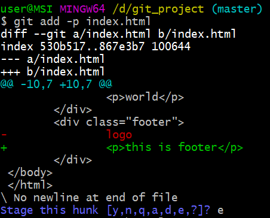
5. 合併多個 commit (使用 Rebase)
1 | $ git rebase -i SHA-1值 // 使用 Rebase 編輯 commit(i 代表進入互動模式) |
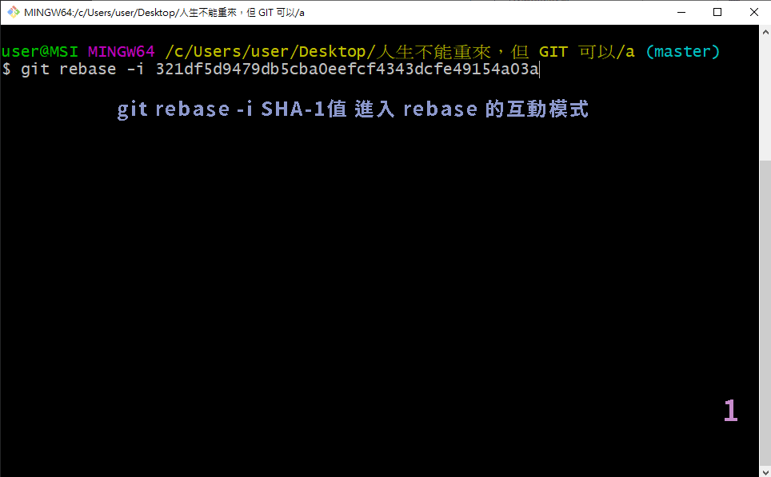
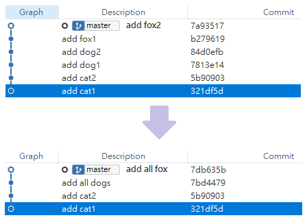
6. 把 1 個 commit 拆成多個
1 | $ git rebase -i SHA-1值 // 使用 Rebase 編輯 commit(i 代表進入互動模式) |
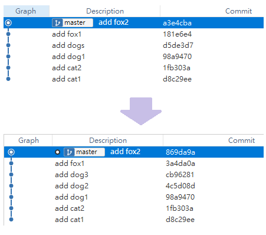
7. 在某些 commit 之間加新的 commit
1 | $ git rebase -i SHA-1值 // 使用 Rebase 編輯 commit(i 代表進入互動模式) |
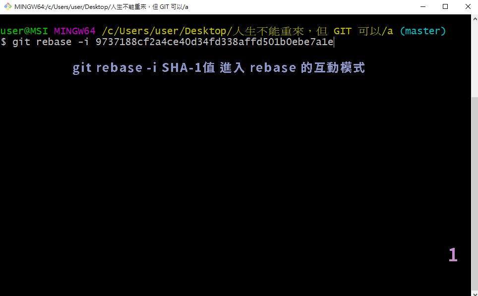
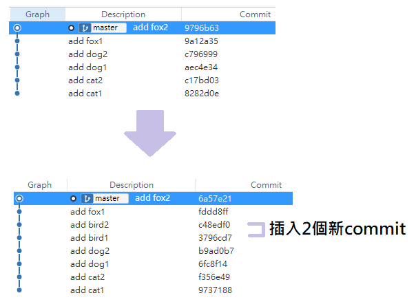
8. 刪除 commit
1 | $ git rebase -i SHA-1值 // 使用 Rebase 編輯 commit(i 代表進入互動模式) |
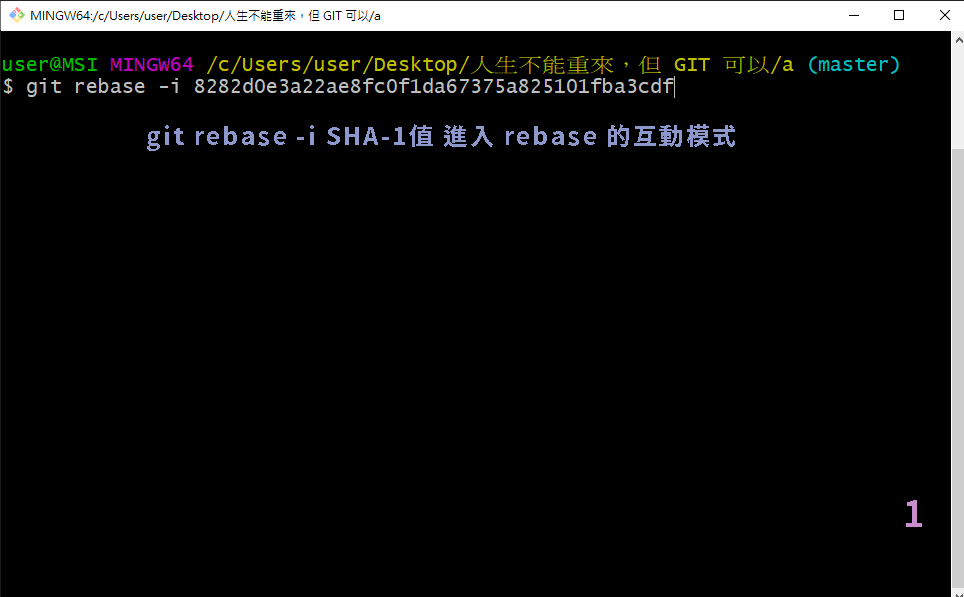
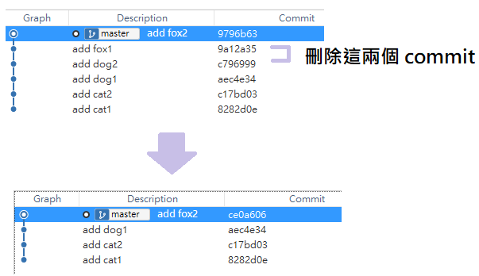
取消此次 rebase
1
$ git reset ORIG_HEAD --hard
9. 調整 commit 順序
1 | $ git rebase -i SHA-1值 // 使用 Rebase 編輯 commit(i 代表進入互動模式) |
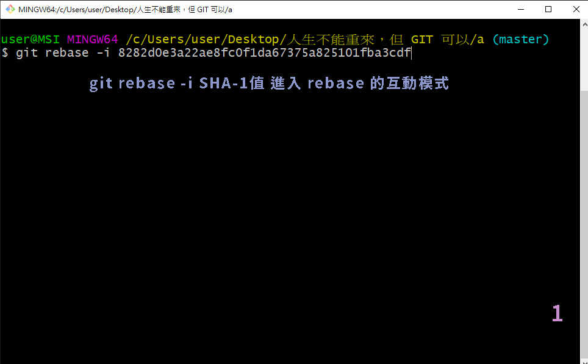
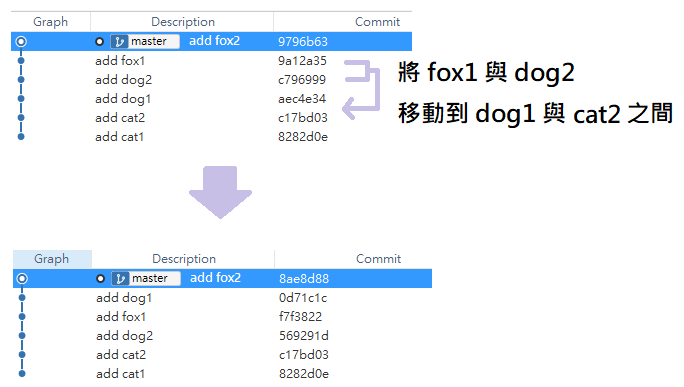
取消此次 rebase
1
$ git reset ORIG_HEAD --hard
Git 學習筆記 系列文章